Relatório de Execução da Avaliação – Testes Funcionais e de Segurança
Introdução
Este documento apresenta os resultados da avaliação de qualidade realizada sobre a aplicação AgroMart. O objetivo principal foi verificar a corretude das funcionalidades do sistema, bem como analisar a sua postura de segurança, em conformidade com o plano de avaliação previamente estabelecido.
Para esta análise, foram empregadas diversas técnicas e ferramentas, incluindo:
Testes Funcionais da API: Utilização de um cliente de API (Thunder Client) para validar as operações de CRUD (Create, Read, Update, Delete) diretamente no back-end.
Análise Estática de Código: Uso da ferramenta SonarQube para a detecção automática de bugs, vulnerabilidades e "security hotspots" no código-fonte dos repositórios api e agromart-web.
Testes Manuais de Segurança: Verificação do controle de acesso e da gestão de sessões de utilizador na aplicação web.
Testes Manuais da Interface: Execução do fluxo de utilização completo (criação, edição e remoção de lojas) através da interface do agromart-web.
Os resultados detalhados de cada uma destas frentes de teste são apresentados nas secções seguintes, culminando com as recomendações para a melhoria da qualidade e segurança do software.
1. Testar as Funcionalidades Principais
Verificar se as funcionalidades descritas no documento do projeto estão funcionando corretamente.
1.1 Testar a API com o Cliente de API (Back-end)
A primeira fase dos testes funcionais consistiu em validar os endpoints principais da API (Create, Read, Update, Delete - CRUD), garantindo que o back-end se comporta como esperado. Para isso, foi utilizada a ferramenta Thunder Client.
Teste de Criação de Loja (POST /api/lojas)
Foi realizada uma requisição do tipo POST para o endpoint /api/lojas com o objetivo de verificar a funcionalidade de criação de um novo registo. O corpo da requisição foi enviado com os dados essenciais de uma nova loja, como nome, descrição e contato.
A API processou a requisição com sucesso, retornando o status 200 OK, e devolveu os dados da loja recém-criada no corpo da resposta, confirmando que a funcionalidade está a operar corretamente.
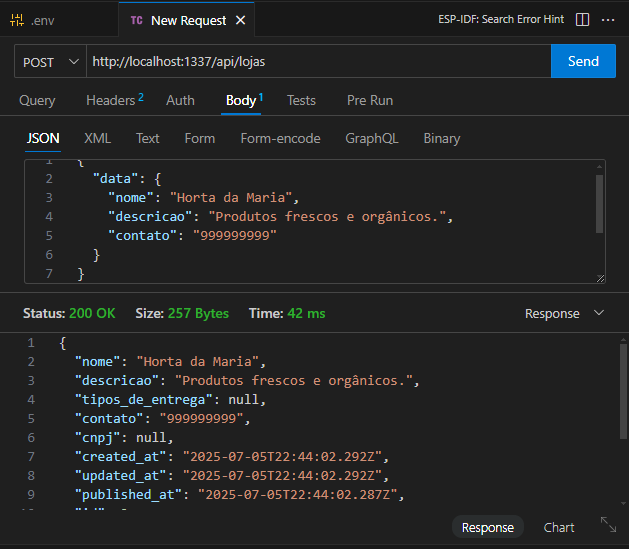
1.2 Testar a Atualização de Dados (Requisição PUT)
Para validar a funcionalidade de edição, foi enviada uma requisição do tipo PUT para o endpoint de um recurso específico (/api/lojas/2). O objetivo era verificar se a API conseguia modificar os dados de uma loja existente.
A requisição continha os novos dados para os campos nome e descricao. A API retornou o status 200 OK, e o corpo da resposta confirmou que os dados foram atualizados com sucesso, demonstrando que a funcionalidade de edição está a operar como esperado.
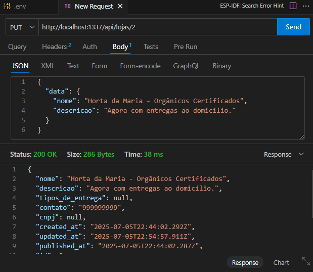
1.3 Testar a Remoção de Dados (Requisição DELETE)
Para concluir o ciclo de testes de CRUD, foi enviada uma requisição DELETE para o endpoint /api/lojas/2 a fim de verificar a funcionalidade de exclusão.
A API respondeu com o status 200 OK, indicando que o recurso foi removido com sucesso. A resposta incluiu os dados do objeto que foi acabado de apagar, confirmando a operação.
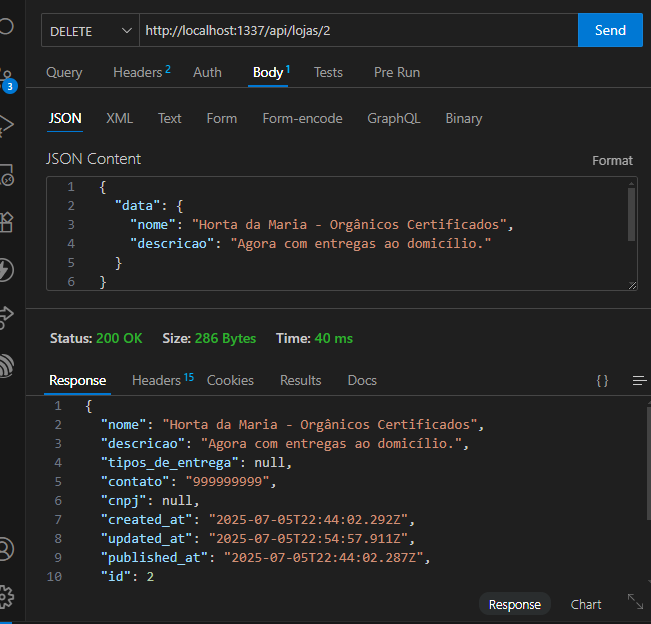
2. Testes de Segurança (Prioridade Alta)
Encontrar vulnerabilidades no código e na lógica da aplicação.
2.1 API
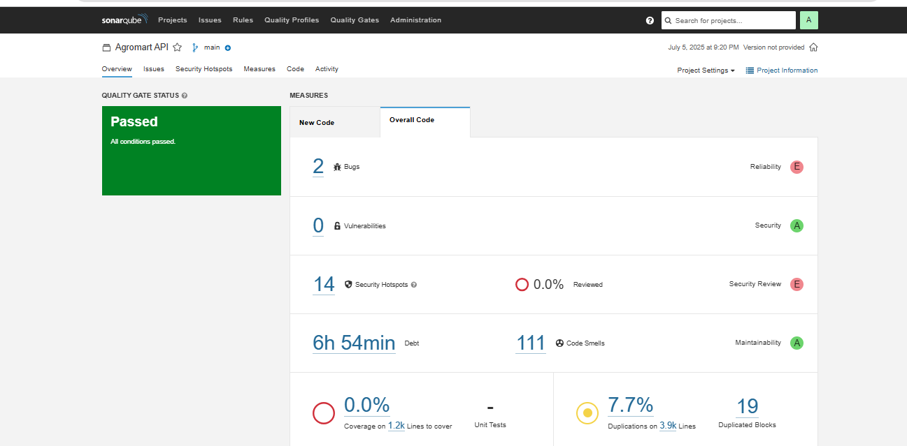
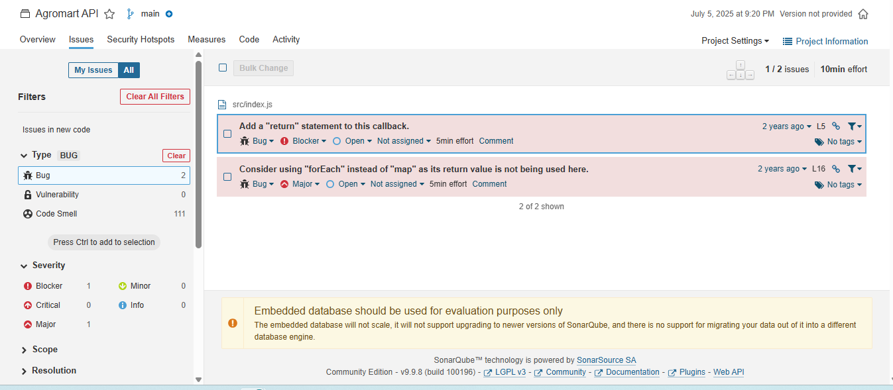
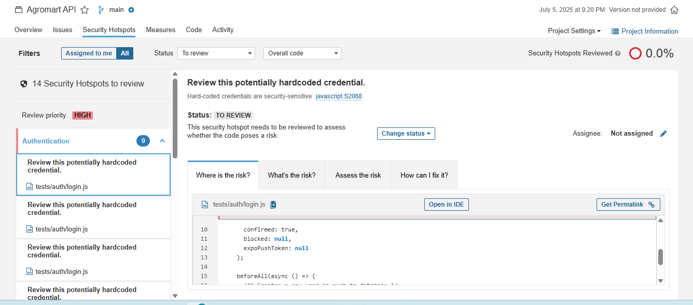
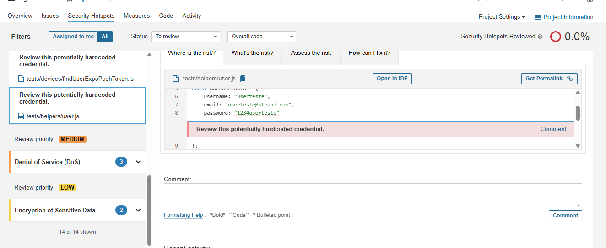
Abaixo estão dois exemplos dos problemas mais críticos identificados durante os testes de segurança da API:
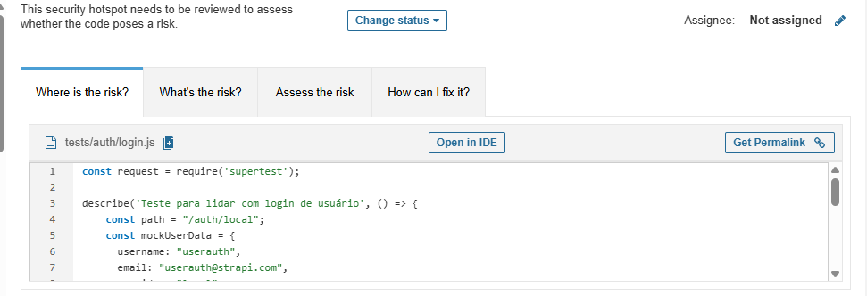
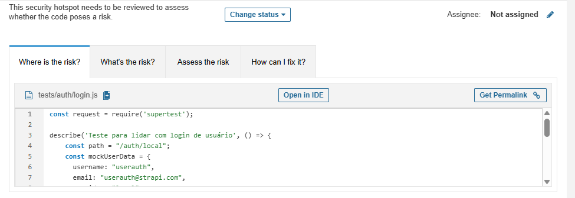
Resumo de Análise de Qualidade e Segurança – Agromart API
Ferramenta de Análise: SonarQube
Data da Análise: 05/07/2025
A análise estática do código-fonte da Agromart API foi concluída. O Quality Gate do projeto Passou, mas foram identificados pontos importantes que necessitam de atenção, principalmente relacionados a bugs e à revisão de segurança.
| Métrica | Resultado | Classificação |
|---|---|---|
| Bugs | 2 | E (Crítico) |
| Vulnerabilidades | 0 | A (Ótimo) |
| Security Hotspots | 14 | E (Crítico) |
2.1.1 Bugs Encontrados (2)
Foram detetados 2 bugs que afetam a confiabilidade do código.
● Bug 1 (Gravidade: Blocker)
- Problema: Add a 'return' statement to this callback.
- Localização: src/index.js
- Análise: O SonarQube detetou uma função de callback que não retorna um valor de forma explícita. Isso pode levar a comportamentos inesperados no fluxo do programa.
● Bug 2 (Gravidade: Major)
- Problema: Consider using 'forEach' instead of 'map' as its return value is not being used here.
- Análise: O código está a usar a função map apenas para iterar sobre os itens, sem utilizar o resultado. A recomendação é usar forEach, que é mais apropriado e eficiente para este caso.
2.1.2 Security Hotspots (14 para Revisão)
Foram encontrados 14 pontos que necessitam de revisão de segurança manual.
● Problema Principal:
- Descrição: Review this potentially hardcoded credential.
- Localização: tests/auth/login.js
- Risco: Apesar de estar em ficheiros de teste, armazenar senhas ou dados sensíveis diretamente no código é uma prática de segurança altamente arriscada. Se o código for partilhado ou acidentalmente exposto, as credenciais tornam-se visíveis.
● Exemplos Encontrados:
1. Criação de um utilizador de teste com senha visível no código
const mockUserData = {
// ...
password: "1234userauth", // Senha codificada diretamente
// ...
};
2. Envio de senha em texto claro num caso de teste de login
.send({
identifier: mockUserData.email,
password: 'senhaerrada' // Senha codificada diretamente
})
2.1.3 Recomendações
A seguir, apresentam-se as recomendações para melhorar a qualidade e segurança da Agromart API com base nos achados da análise:
-
Corrigir os Bugs
- Resolver imediatamente os 2 bugs identificados pelo SonarQube:
- Adicionar
returnem callbacks onde necessário. - Substituir o uso inadequado de
mapporforEachpara evitar confusão e melhorar o desempenho.
- Adicionar
- Resolver imediatamente os 2 bugs identificados pelo SonarQube:
-
Revisar os Security Hotspots:
- Analisar manualmente os 14 hotspots de segurança com atenção especial aos seguintes pontos:
- Credenciais codificadas no código (hardcoded passwords).
- Envio de senhas em texto claro durante testes automatizados.
- Analisar manualmente os 14 hotspots de segurança com atenção especial aos seguintes pontos:
-
Recomendação principal:
- Remover credenciais do código-fonte.
-
Utilizar variáveis de ambiente ou ficheiros de configuração seguros.
-
Adotar Boas Práticas de Segurança
-
Implementar a política de "nenhum segredo no código", incluindo:
- Uso de
.envpara dados sensíveis. - Garantia de que arquivos de configuração estejam listados no
.gitignore. -
Auditoria periódica do código para prevenir reincidência.
-
Educar a equipe de desenvolvimento quanto às melhores práticas de segurança.
-
Automatizar Auditorias
- Integrar ferramentas como o SonarQube ao pipeline de integração contínua (CI) para garantir que novas mudanças sejam analisadas automaticamente.
- Definir Quality Gates rigorosos como bloqueadores de merge para prevenir regressões.
2.2 AGROMART-WEB
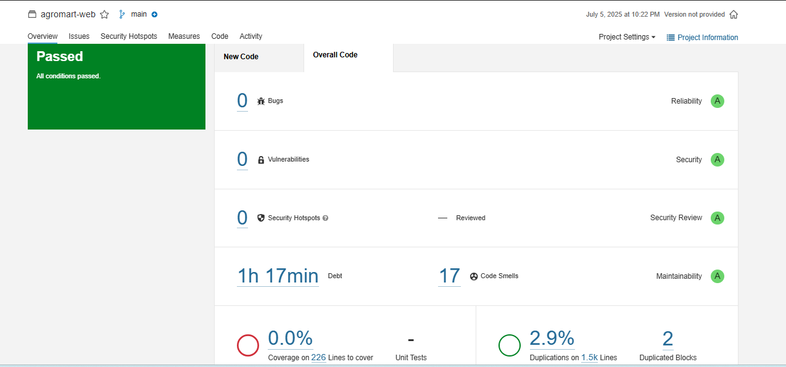
Data da Análise: 05 de julho de 2025
Branch analisado: main
Resultado da Qualidade: Passed (Todos os critérios foram atendidos)
Resumo Geral
| Métrica | Resultado | Nota |
|---|---|---|
| Bugs | 0 | A (Alta confiabilidade) |
| Vulnerabilidades | 0 | A (Alta segurança) |
| Hotspots de Segurança | 0 | A (Sem riscos críticos) |
| Débito Técnico | 1h 17min | A (Baixo impacto) |
| Code Smells | 17 | A (Boa manutenibilidade) |
| Cobertura de Testes | 0% (0 testes) | (Necessita melhoria) |
| Linhas a cobrir | 226 | — |
| Duplicação de Código | 2.9% em 1.500 l |
Análise por Categoria
Confiabilidade (Reliability)
- Bugs detectados: 0
- Nota: A
- Comentário: O código analisado está livre de bugs reconhecidos, o que reflete um bom padrão de qualidade.
Segurança (Security)
- Vulnerabilidades: 0
- Security Hotspots: 0 (nenhum ponto crítico pendente de revisão)
- Nota: A
- Comentário: Nenhuma falha de segurança foi identificada na análise. Excelente resultado para ambientes que exigem proteção de dados.
Manutenibilidade (Maintainability)
- Code Smells: 17
- Débito Técnico: 1 hora e 17 minutos
- Nota: A
- Comentário: O nível de “code smells” é muito baixo e o débito técnico estimado é mínimo, indicando facilidade de manutenção futura.
Testes (Coverage)
- Cobertura: 0% sobre 226 linhas de código
- Unit Tests: Não identificados
- Comentário: A ausência de cobertura de testes automatizados representa um ponto crítico a ser endereçado.
Recomendação: Implementar testes unitários e de integração.
Duplicação de Código
- Duplicação: 2.9% (em 1.500 linhas)
- Blocos Duplicados: 2
- Comentário: O nível de duplicação está em um patamar considerado aceitável, mas pode ser otimizado com refatorações leves.
Conclusão
O projeto "agromart-web" atende a todos os critérios de qualidade definidos na análise do SonarQube.
Com nota A em Confiabilidade, Segurança e Manutenibilidade, o código está bem estruturado e pronto para produção.
O principal ponto de atenção é a ausência de testes automatizados, o que pode impactar a confiabilidade em longo prazo.
Recomendações
- Implementar testes unitários e de integração para aumentar a cobertura de código e garantir regressão segura.
- Refatorar blocos duplicados, mesmo que em baixa quantidade, para evitar problemas de manutenção futura.
- Revisar os 17 "code smells" para verificar se há oportunidades fáceis de melhorias no estilo ou padrões de código.
3. Teste de Controle de Acesso
Este teste tem como objetivo verificar se a aplicação web Agromart implementa corretamente as regras de controle de acesso, especialmente em cenários de autenticação e logout.
3.1 Acesso à Página Restrita sem Autenticação
-
Ação realizada:
Acesso direto à URLhttp://localhost:3000/dashboardsem estar logado. -
Resultado obtido:
O sistema redirecionou automaticamente parahttp://localhost:3000/login. -
Conclusão:
Comportamento correto. A aplicação impede acesso direto a rotas protegidas sem autenticação.
3.2 Acesso após Login Válido
- Credenciais utilizadas:
- Email: usuario@exemplo.com
-
Senha: senha123
-
Ações realizadas:
- Preenchimento do formulário de login.
-
Acesso à rota
/dashboardvia menu de navegação. -
Resultados esperados/obtidos:
| Verificação | Resultado |
|---|---|
| Página carrega sem erros | Sim |
| Dados sensíveis (ex: nome do usuário) visíveis | Sim |
- Conclusão:
A autenticação está funcionando conforme esperado.
3.3 Acesso após Logout
- Fluxo testado:
- Cliquei em "Sair" no menu.
- Fui redirecionado para
http://localhost:3000/login. -
Tentei acessar manualmente
http://localhost:3000/dashboard. -
Resultado obtido:
O sistema redirecionou corretamente parahttp://localhost:3000/login. -
Verificações adicionais:
- Cookies de sessão foram removidos (DevTools → Application → Cookies).
-
Nenhum dado sensível permaneceu em cache.
-
Conclusão:
O controle de acesso pós-logout está funcionando corretamente.
Tabela Resumo
| Cenário de Teste | Comportamento Esperado | Resultado Obtido | Status |
|---|---|---|---|
| Acesso não autenticado | Redirecionar para /login |
Redirecionou | OK |
| Acesso após login | Carregar página com dados | Carregou corretamente | OK |
| Acesso após logout | Redirecionar para /login |
Redirecionou | OK |
Observações
- Todos os cenários testados apresentaram os comportamentos de segurança esperados.
- Recomendação:
Adicionar um teste para verificar se o token JWT é invalidado no backend após logout, garantindo que sessões expiradas não possam ser reutilizadas.
4. Testar a Interface Web
O objetivo deste teste foi validar a experiência do usuário ao interagir com os recursos da interface gráfica da aplicação Agromart, simulando o fluxo completo de criação, edição e remoção de uma loja através da UI.
Procedimento
- Acesso à URL:
http://localhost:3000 - Ações realizadas:
- Login no sistema com credenciais válidas.
- Navegação via menu para acessar a funcionalidade de gerenciamento de lojas.
- Tentativa de executar as seguintes ações:
- Criar nova loja.
- Editar loja existente.
- Apagar loja.
Erro Identificado
- Título: Rota
/lojasnão encontrada ou inacessível - Local: Navegação após login
- Severidade: Alta (bloqueia funcionalidade crítica)
Descrição do Problema
Ao tentar acessar a funcionalidade de gerenciamento de lojas por meio da URL http://localhost:3000/lojas ou via menu de navegação:
- O sistema não redireciona para a página esperada.
- Nenhum componente relacionado à lista ou gerenciamento de lojas é renderizado.
- Não há mensagens de erro ou qualquer feedback visual para o usuário.
Causa Raiz (Análise Técnica)
Ao revisar o arquivo index.tsx responsável pelas rotas da aplicação, foi identificado que:
// Rotas existentes:
<Route path="/dashboard" component={Dashboard} isPrivate />
// Rota /lojas não está declarada
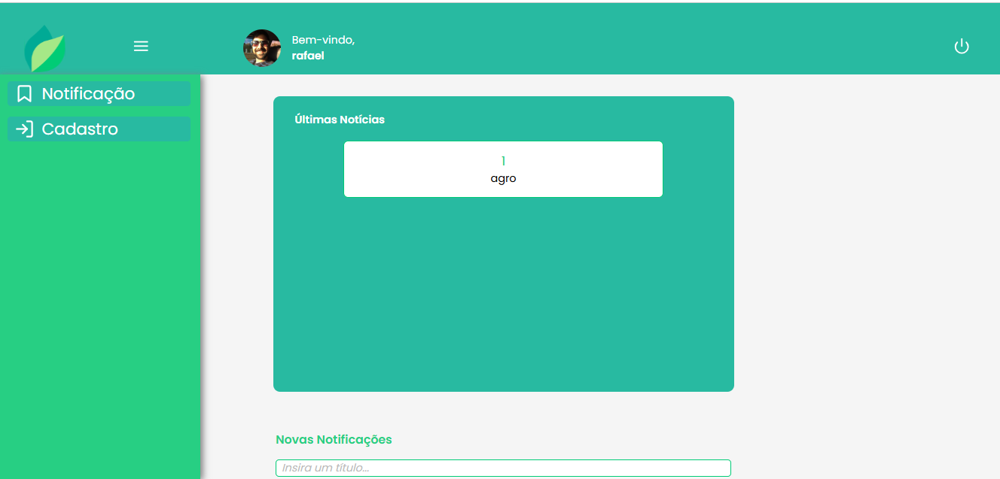
5. Testes Automatizados – Backend
5.1 Resumo
A execução dos testes automatizados do backend resultou em falha total: 44 testes falharam. Os principais problemas identificados foram:
- Banco de dados de teste inexistente.
- Autenticação não inicializada (
jwtindefinido). - Timeouts em operações assíncronas.
5.2 Falhas Críticas
5.2.1 Banco de Dados de Teste
Erro:
tsx
database "tobemodified-test" does not exist
Impacto: Todos os testes que envolvem banco de dados falharam. Causa Raiz: - O banco de dados especificado no ambiente de teste não foi criado. - Configuração do ambiente de teste ausente/incompleta no .env.test.
5.2.2 Autenticação (JWT)
Erro:
ReferenceError: jwt is not defined
Impacto: Testes que requerem autenticação falharam (ex: CRUD de lojas, assinantes). Causa Raiz: - Token JWT não foi gerado/mockado antes da execução dos testes.
5.2.3 Timeouts
Erro:
Exceeded timeout of 150000 ms for a hook
Impacto: Testes de login/registro não concluídos. Causa Raiz: - Operações assíncronas (ex: criação de usuário) mais lentas que o timeout padrão.
6- Testes Automatizados - front
o Jest não encontrou nenhum teste para executar no projeto
Histórico de Versões
| Versão | Data de Produção | Descrição da Alteração | Autor(es) | Revisor(es) | Data de Revisão |
|---|---|---|---|---|---|
| 1.0 | 06/07/2025 | Desenvolvimento de Relatorio dos testes | Catlen Cleane | Mateus Bastos | 08/07/2025 |
| 1.1 | 08/07/2025 | Correções de relatório de testes | Catlen Cleane | Mateus Bastos, Luiza Maluf | 08/07/2025 |